荒崎海岸
| 日付 | 2019年8月4日（日） |
|---|---|
| メンバー | 家族（妻、長女・8歳、長男・6歳） |
| アクセス | 車 |
息子の病気で今年の夏は海にも山にも川にも行けていない。
息子の体の具合がだいぶ良くなってきたため、
好天の週末にどこかにでかけることにする。
山はもう少し体力が回復してから行くことにし、
今回は盆前にしか行けない海に行くことにする。
今回もいつも通り荒崎海岸へ。本日は比較的水の量が多く、泳ぐには良い環境だ。
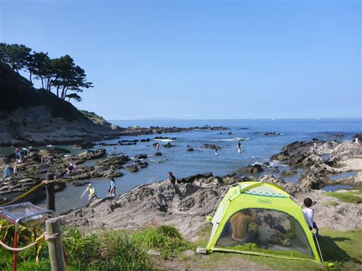
暑いのでまずは水の中に入る。今回から子供用シュノーケリングセットを1つ用意。
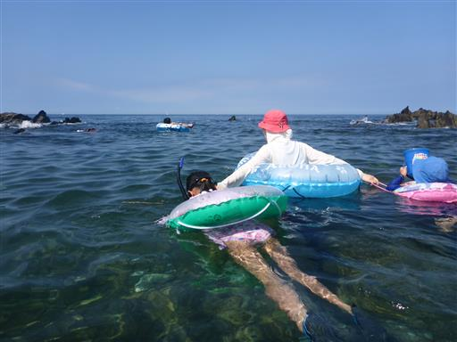
その後は生物捕り。息子はこちらの方が楽しいようだ。
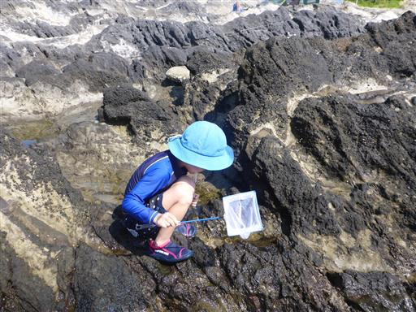
娘もカニを探して捕まえている。この季節になるとハゼの数は少なくなる。
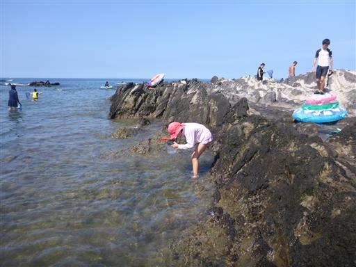
水中写真に挑戦。今回も上手く撮れず。下の方にナベカのしっぽが写っている。
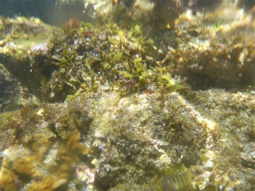
昼近くになると水の量がだいぶ減ってくる。取り残された生物を探す。
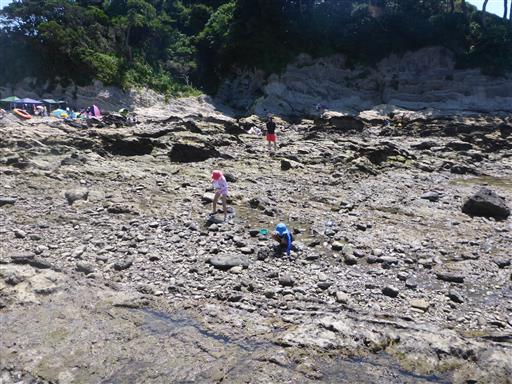
今回は大量の小エビが見つかる。
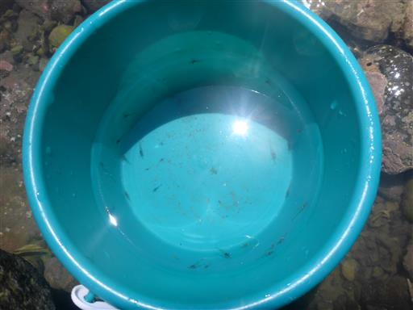
昼食。イスとテーブルの側だと便利だ。
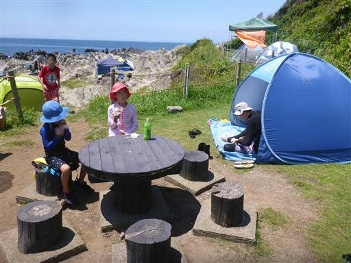
暑いので午後もひと泳ぎ。少し波が高くなってきた。
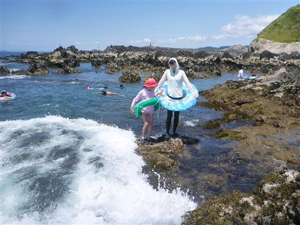
波に流されてバランスを崩す。この辺りは尖った岩が多いので怪我しやすい。
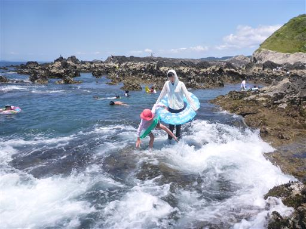
今回も新たなシュノーケリングスポットを探して、岩の中を歩く。
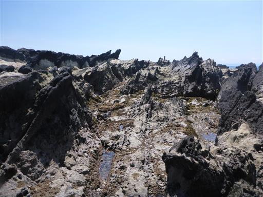
フジツボ地帯。踏むと大怪我しそうだ。
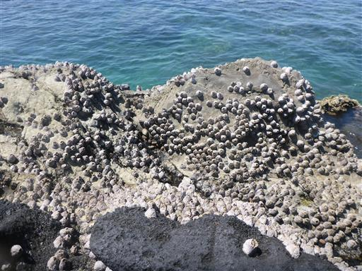
この辺りは未開拓のゾーン。人があまり来ない場所のため、
水の透明度が高く、ソラスズメダイなど多くの魚が見られた。
今年の夏も無事、海遊びができて良かった。
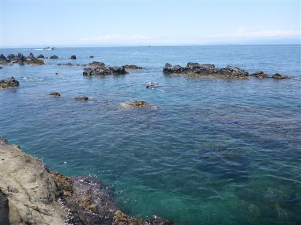
他の記録